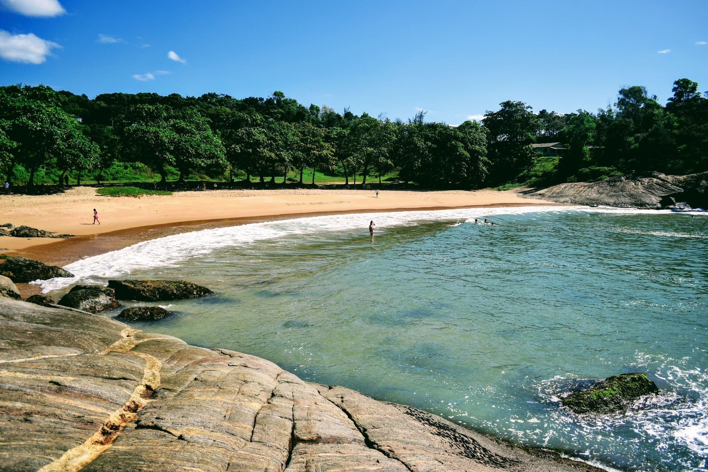

<ion-header [translucent]="true">
  <ion-toolbar color="warning">
    <ion-title>
      Praias do Espírito Santo
    </ion-title>
  </ion-toolbar>
</ion-header>

<ion-content [fullscreen]="true">
  
<!-- List of Sliding Items -->
<ion-list>
  <ion-item-sliding>
    <ion-item>
      <ion-thumbnail slot="start">
        
      </ion-thumbnail>
      <ion-label>
        <ion-text color="primary">
        <p>Praia dos Padres</p>
        </ion-text>
      <ion-text>Guarapari</ion-text>
    </ion-label>
        <ion-note slot="end">Sul</ion-note>
    </ion-item>
    <ion-item-options side="end">
      <ion-item-option (click)="openSite()">
        <ion-icon slot="icon-only" name="information-circle-outline"></ion-icon>
      </ion-item-option>
      <ion-item-option (click)="favoritar()" color="danger">
        <ion-icon slot="icon-only" name="heart-outline"></ion-icon>
      </ion-item-option>
    </ion-item-options>
  </ion-item-sliding>

</ion-list>
</ion-content>
